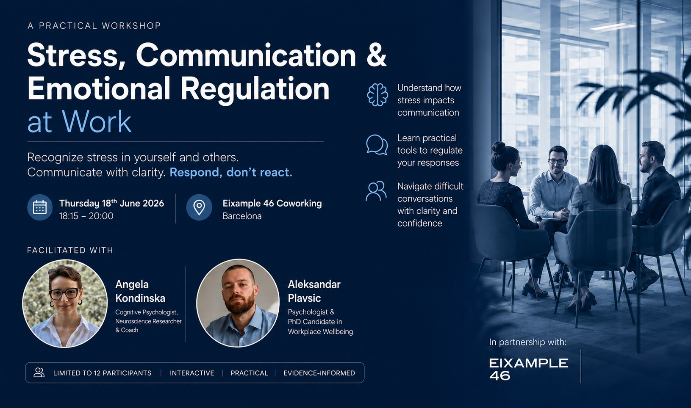

Za organizacije
Podrška mentalnom zdravlju na radu za HR i People timove.
Radionice, podrška rukovodiocima, saradnja u EAP formatu i inicijative za organizacionu dobrobit za međunarodne i multikulturalne timove.
Pogledaj organizacionu podršku ↗
Psiholog
Praktična podrška utemeljena u istraživanju za pritisak koji ljudi nose na poslu: burnout, teški razgovori i cena stalne dostupnosti. Za organizacije koje grade zdravije timove i za profesionalce kojima je potreban prostor da razmisle u miru.
Izaberi svoj put
Dva jasna puta: jedan za HR i People timove koji grade zdravija radna okruženja, i drugi za pojedince kojima je potrebna psihološka podrška.
Za organizacije
Radionice, podrška rukovodiocima, saradnja u EAP formatu i inicijative za organizacionu dobrobit za međunarodne i multikulturalne timove.
Pogledaj organizacionu podršku ↗Za pojedince
Podrška kod rizika od burnouta, anksioznosti, radnog stresa, promena u karijeri, konflikata na poslu, izazova preseljenja i emocionalne dobrobiti.
Pogledaj individualnu podršku ↗Po čemu je moj pristup drugačiji
Kako radim
Dovoljno usporavamo da razumemo šta nosiš i kako to utiče na tvoju svakodnevicu.
Stres se posmatra u vezi sa poslom, odnosima, identitetom, odgovornošću i sredinama u kojima živimo.
Rad povezuje promišljanje sa jasnijim odlukama, zdravijim granicama, boljom komunikacijom i održivim rutinama.
Psihološko znanje se primenjuje konkretno, bez pretvaranja sesija u akademsku teoriju.
Client feedback
„Prvi put sam razgovarao sa psihologom i oklevao sam jer nisam znao kako će proces izgledati. Razgovori su bili prirodni, s poštovanjem i lako razumljivi. Nisam se osećao osuđeno niti gurnuto u etikete, što mi je pomoglo da se postepeno otvorim.“
First-time therapy client based in Serbia„Javio sam se dok sam radio na zahtevnoj poziciji u američkoj kompaniji. U početku sam mislio da je reč samo o pritisku na poslu, ali sesije su mi pomogle da shvatim koliko pritiska nosim uopšte. Osećao sam da mogu otvoreno da govorim i da odlazim sa nečim korisnim za razmišljanje.“
Međunarodni klijent koji radi za američku kompaniju„Kao ekspat u Barseloni, mučila sam se sa prilagođavanjem, jezikom i osećajem da sam se skrasila u novoj sredini. Mogućnost da govorim na engleskom i španskom mnogo je značila. Aleksandar odlično vlada jezicima i to mi je pomoglo da se izrazim mnogo prirodnije.“
Expat client based in Barcelona„Nosio sam se sa pitanjima identiteta i odnosa i pomoglo mi je što je prostor bio pun razumevanja i LGBTQ+ prijateljski, a da to ne postane jedina tema. Osećao sam se uvaženo, saslušano i slobodno da govorim iskreno.“
Client based in SerbiaSekundarni put za profesionalce, ekspate i međunarodno mobilne klijente koji se suočavaju sa pritiskom na poslu, rizikom od burnouta, tranzicijama, identitetom i zahtevnim okruženjima.
Glavni put za HR, People & Culture, osobe zadužene za dobrobit i međunarodne i multikulturalne timove kojima treba strukturisana podrška u prevenciji burnouta, dobrobiti zaposlenih i mentalnom zdravlju na radu.
Specijalizovane radionice i strateške sesije o prevenciji burnouta, dobrobiti rukovodilaca, interkulturalnoj komunikaciji i održivom psihološkom funkcionisanju.
Public mental health work
Prethodni javni rad obuhvata medijska gostovanja, intervjue i okrugle stolove o mentalnom zdravlju na radu, prevenciji burnouta, pritisku na poslu i psihološki utemeljenim sistemima podrške.


Public work & workshops
Izbor medijskih nastupa, javnih razgovora i praktičnih radionica o prevenciji burnouta, pritisku na poslu i psihološki utemeljenoj podršci.

Dostupan za uvodne razgovore sa HR timovima, People & Culture rukovodiocima, osobama zaduženim za dobrobit, EAP pružaocima, klinikama, kovorking zajednicama i međunarodnim organizacijama.
Razgovor o saradnji ↗